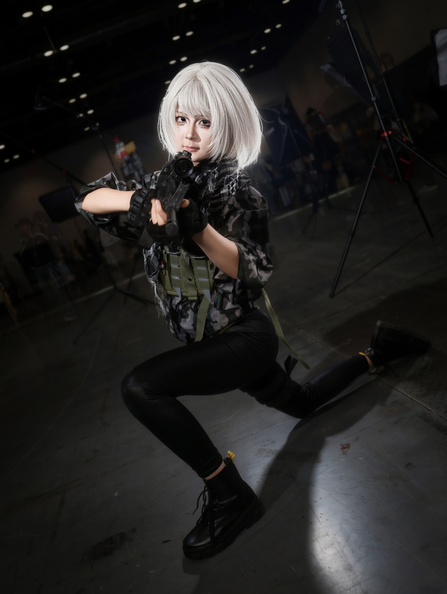

Photography / Convention coverage / Composite editing
Directing characters in a crowded live space.
This case study shows a curated set of convention portraits across multiple characters. The emphasis is not volume; it is selection, visual hierarchy, subject comfort, and finished delivery.
Canon capture
Lightroom + Photoshop
Subject direction
Composite polish
Why this belongs in the video portfolio.
Video work depends on directing people quickly, reading lighting, controlling the frame, and choosing the moment that tells the clearest story. These portraits show that same eye in still form, with enough production polish to support a multimedia role.
Workflow
On-site shooting, subject pose direction, selection, color correction, cleanup, compositing, and export-ready presentation.
Curated portrait sequence





Convention portrait photographs are shared with permission from the photographed subjects. Images are edited by Yibo Wang for color, framing, and portfolio presentation.